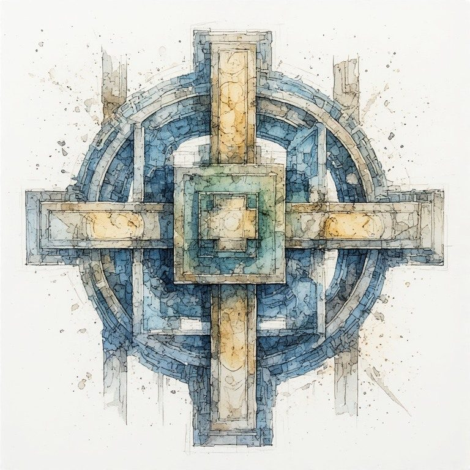

Part Five: Intergenerational Witness
← Part Four: The Not-Yet-Born · Radical Immanence Collection · Part Six: The Cross →
The Here Is Enough pillar on The Witness describes a quality of attention that stays present with what is hard without immediately rushing to fix it. It stays in the room. It sees clearly. It does not make the difficulty into something else before it has been fully felt.
The Crossing Point extends that practice across time. Intergenerational witness is the same quality of attention applied to the vertical axis: staying present with the sediment honestly, including its harm and its beauty both, without rushing to redemption or collapse.
Reading the Sediment Honestly
The sediment is not all beautiful. Every family, community, and culture that has made you possible also deposited harm. Violence. Exclusion. Theft. Silence where honesty was needed. Patterns that injured people who could not say so.
The intergenerational witness reads all of it. Not only the parts that are comfortable to claim. Not only the ancestors who were admirable. Not only the traditions that were generous and wise. The full sediment. The layers of harm alongside the layers of gift.
This is not self-flagellation. It is not an invitation to collective guilt or personal shame. It is the same thing the witness always does: staying in the room with what is hard without flinching or rushing to make it into something more manageable. You can see the harm in your inheritance and still be here, still be whole, still be carrying forward what is worth carrying. The honest reading does not destroy you. It makes your carrying more trustworthy.
What in your inherited sediment is hardest to read honestly? What does flinching from it cost you?
The Negative Space of the Future
The intergenerational witness also attends to the negative space of the future. Not only what you intend to deposit, but what you might be depositing without knowing it. Not only the harm you would never consciously choose to pass forward, but the harm that travels in the gap between intention and effect.
This requires a particular kind of humility. You cannot fully know what you are depositing. You are inside the process. The effects of what you are forming will not be fully visible until long after you are gone. This is genuinely uncomfortable. It is also simply true, and pretending otherwise is a form of dishonesty.
The practice is not certainty. It is attentiveness. Staying curious about the gap between what you mean to pass forward and what is actually in motion. Asking the people closest to you what they are receiving from you. Listening to the answer without immediately defending yourself or collapsing into shame. Adjusting where you can. Naming what you cannot adjust.
| The intergenerational witness does not need to see everything clearly. It needs to stay curious, to keep asking what is actually in motion, to resist the temptation to replace honest seeing with comfortable narrative. That is enough. |
|---|
What might you be depositing without fully knowing it? Who in your life is positioned to see what you cannot?
Holding the Tension
The intergenerational witness holds a particular tension: between being a finite person and being on an infinite transmission line. You are small. The transmission line is enormous. You cannot carry everything. You cannot repair everything. You cannot even see everything clearly.
And you are on the line. The carrying continues whether you attend to it or not. The only question is whether you attend.
Holding that tension without collapsing it is the practice. Not resolving into: I am just one person, it does not matter what I do. Not resolving into: the weight of what I owe the future is crushing. Holding both: I am finite, and I am on the line, and what I do matters in ways I cannot fully trace, and here is enough, and here is also enormous.
What does it feel like to hold both things at once: I am finite, and I am on a transmission line that is longer than my life?
Here Is Enough.
